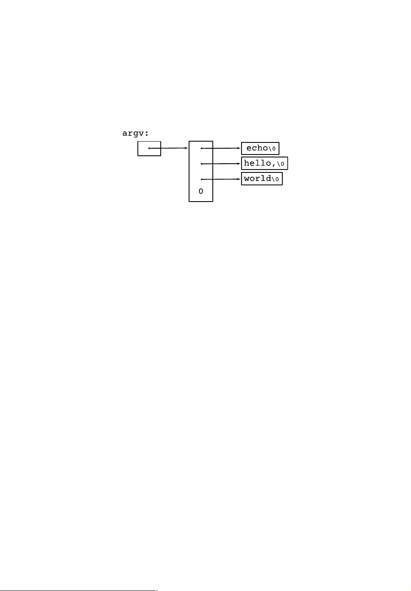

115
argv[0]
argc argc
argc argv[0] argv[1]
argv[2] "echo" "hello, " "world"
argv[1] argv[argc−1]
argv[argc]
echo argv
#include <stdio.h>
/* echo command-line arguments; 1st version */
main(int argc, char *argv[])
{
int i;
for (i = 1; i < argc; i++)
printf("%s%s", argv[i], (i < argc-1) ? " " : "");
printf("\n");
return 0;
}
argv
argv
char argc
#include <stdio.h>
/* echo command-line arguments; 2nd version */
main(int argc, char *argv[])
{
while (--argc > 0)
printf("%s%s", *++argv, (argc > 1) ? " " : "");
printf("\n");
return 0;
}
argv
++argv argv[1]
argv[0]
*argv argc
printf